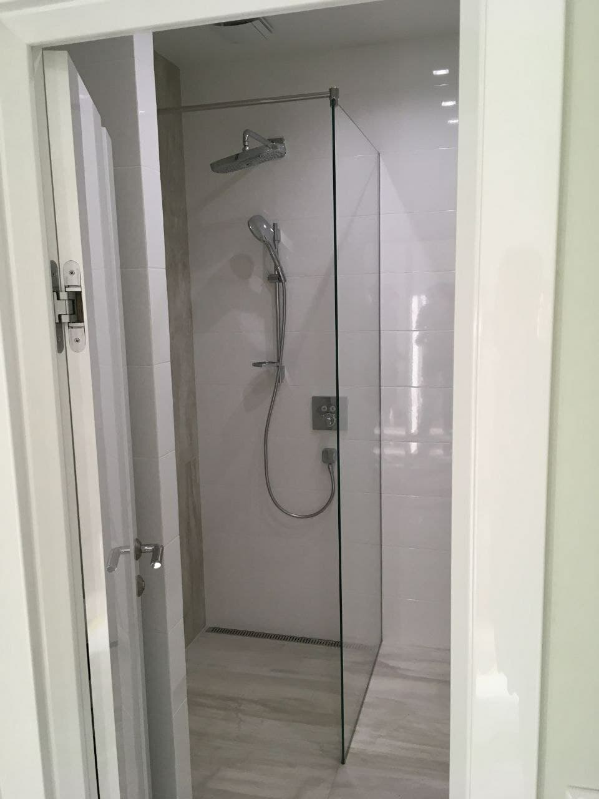
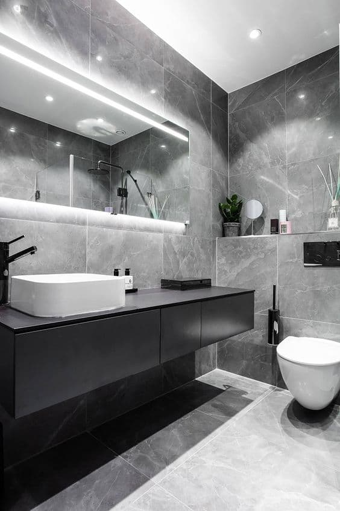
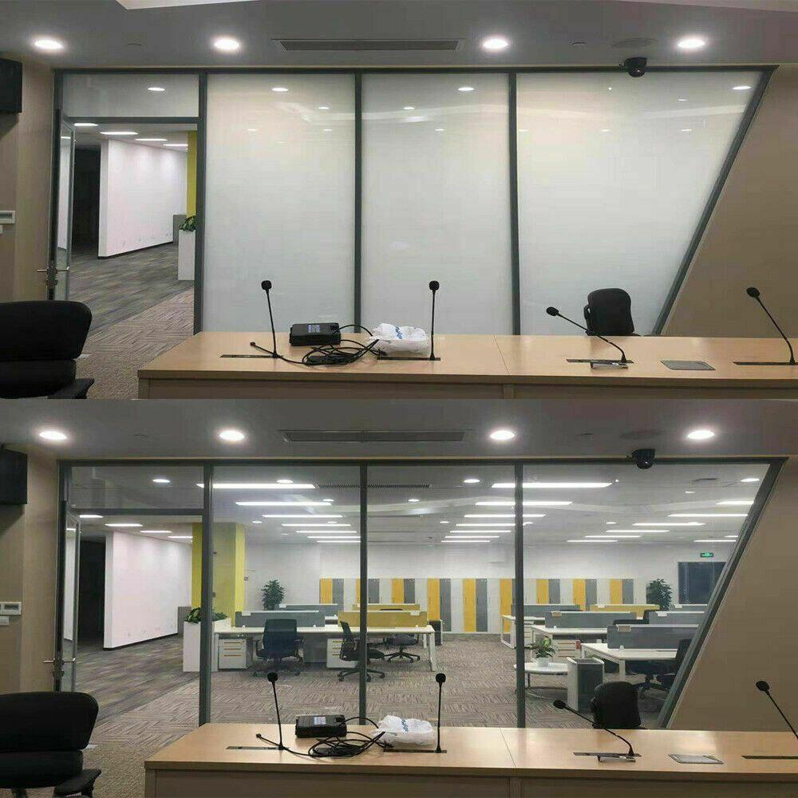

Услуги, оказываемые нашей компанией
Наша компания специализируется на производстве стеклянных конструкций и изделий.
Так же мы предлагает своим клиентам большой ассортимент продукции строительного назначения.
-
Офисные перегородки
Стеклянные перегородки – это уникальная возможность аккуратно и стильно разграничить пространство офисов, магазинов и других помещений на отдельные зоны, не теряя при этом освещенности и объема.
-
Душевые перегородки
Все чаще на смену обычным громоздким ваннам стали устанавливаться аккуратные и гигиеничные стеклянные перегородки для душа. Они очень стильно и изящно выглядят в интерьере, не нагромождают пространство, предотвращают разбрызгивание и сохраняют тепло, практичны и удобны в использовании, а также неприхотливы в уходе.
Заказать у нас стеклянные душевые перегородки – значит современно и лаконично обустроить ванную комнату, превратив ее в настоящую зону комфорта и наслаждения.
 -
Лестничные ограждения
Купить или изготовить стеклянные ограждения для лестницы в Гомеле у нас позволит вам не только получить отличные решения в обустройстве роскошного интерьера, но и привнести в свой быт частичку легкости и невесомости.
-
Распашные и раздвижные двери
Стеклянные распашные или раздвижные двери – это превосходное сочетание изящного стиля и невероятной легкости. Прочные, безопасные и удобные в использовании, они все чаще встречаются в современных квартирных и офисных интерьерах. Двери из стекла зрительно не нагромождают помещения, позволяя проникать в них большому количеству света, и наполняя их чистотой и уютом.
-
Зеркала
Зеркало для ванной комнаты – это приобретение, которое нужно выбирать разумно. Именно возле него мы начинаем каждое свое утро и проводим все дневные и вечерние гигиенические процедуры. Заказав зеркало для ванны - значит получить качественно изделие, которое будет радовать вас каждый день!
 -
Козырьки
Стеклянные козырьки - это современное и локоничное решение как для дома, так и для вашего офиса или ресторана. Стеклянные козырьки добавят легкости и современности в любой интерьер.
По стеклу это все. Если есть какие-то пожелания или коррективы, то вносим.
-
Мягкая и металлическая кровля
Кровля — верхний элемент покрытия здания, подвергающийся атмосферным воздействиям. Главной её функцией является защита внутренних помещений от атмосферных осадков и воздействий. Главными требованиями к кровле являются лёгкость, долговечность, экономичность в изготовлении и эксплуатации.
Своим покупателям мы предлагаем два вида кровли: мягкая и металлическая.
-
Заборы различных видов и уровней сложности
Мы готовы Вам доказать, что забор может быть красивым, практичным и не дорогим. Наша компания изговливает и устанавливает заборы различных видов и уровней сложности.
-
Водосточные системы
Современные технологии производства дают возможность изготавливать металлические водостоки, пригодные для эксплуатации в широком температурном и климатическом диапазоне.
-
Сайдинг
У нас представлен большой выбор сайдинга как для внутренней отделки, так и для наружной. Сотрудничаем с мировыми компаниями.
-
Автоматика и комплектующие для откатных и распашных ворот
Функциональный привод для распашных ворот позволяет легко управлять массивными створками. Контролировать открытие-закрытие конструкции можно с помощью пульта.
-
Ограждения из нержавеющей стали
Ограждения из нержавейки. На сегодняшний день безопасность является одной из обязательных составляющих комфортной жизни человека. Неугомонное развитие цивилизации, начиная с самых древних эр, привело к возникновению такого понятия, как частная собственность.
-
Смарт пленка и смарт стекло
Презентация PowerPointУникальные, даже в сегодняшнее прогрессивное время технологические продукты – Смарт пленка и «Смарт-стекло» предоставляют в использовании ряд преимуществ:
- позволяет уменьшить потери тепла в помещениях различного назначения за счёт отличных термосберегающих свойств
- поможет сократить расходы на кондиционирование и освещение
- является отличной альтернативой жалюзи, затеняющим экранам, шторам - любым механическим светозащищающим конструкциям
